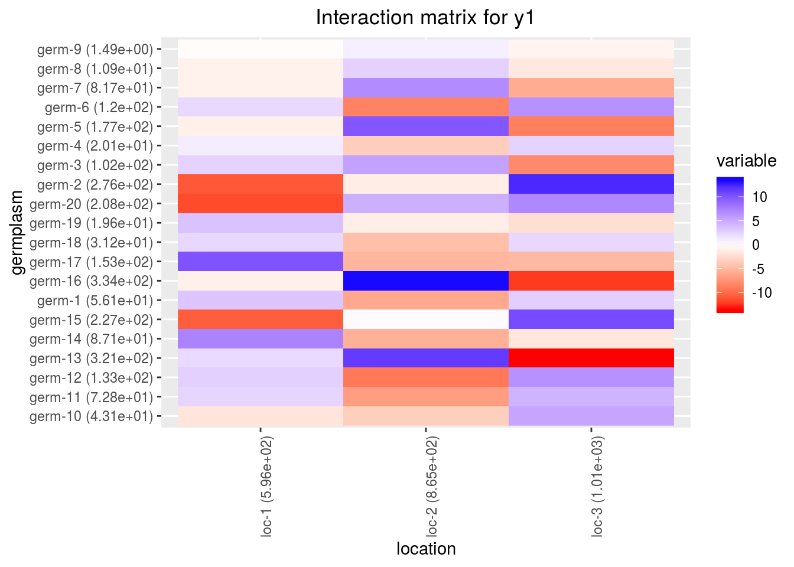
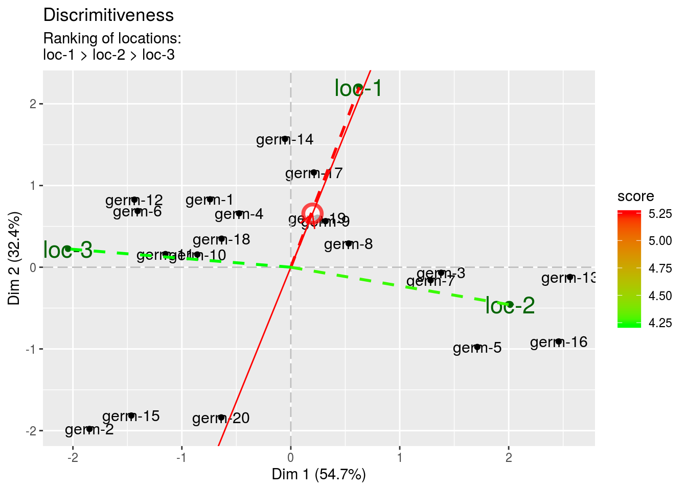

3.6 Family 2 of analysis : Study the response of varieties under selection over several environments
Family 2 gathers analyses that estimate germplasm and location and interaction effects. This is to analyse the response over a network of locations. Estimation of environment and year effects is possible depending of the model. Specific analysis including migrant and residant can also be done. It allows to study the response of germplasm over several location or environments. The objectives is to study response of germplasm over several locations for selection.
3.6.1 Decision tree
To study response of germplasm over several locations for selection, different scenario are possible (Figure 3.24) :
- AMMI and GGE (M6, sections 3.6.3 and 3.6.4) based on on fully replicated designs (D1, section 3.2.1),
- bayesian hierarchical model \(G \times E\) (M7b, section 3.6.5) based on satellite-regional farms designs (D4, section 3.2.4),
It can be completed by specific analysis such as migrant-residant (section ??) which corresponds to a specific objective : study migrant and residant effect, where migrant in a location refers to a germplasm that has not been grown or selected in a given location and resident in a location refers to a germplasm that has been grown or selected in a given location.
Figure 3.24: Decision tree with experimental constraints, designs and methods of agronomic analysis carry out in PPBstats regarding the objective :Study the response of varieties under selection over several environments. D refers to designs and M to methods.
3.6.2 Workflow and function relations in PPBstats regarding family 2 of analysis
Figure 3.25 displays the functions and their relationships. Table 3.3 describes each of the main functions.
You can have more information for each function by typing ?function_name in your R session.
Note that check_model(), mean_comparison(), biplot_data() and plot() are S3 method.
Therefore, you should type ?check_model, ?mean_comparison, ?biplot_data or ?plot.PPBstats to have general features and then see in details for specific functions.

Figure 3.25: Main functions used in the workflow of family 1.
| function name | description |
|---|---|
design_experiment |
Provides experimental design for the different situations corresponding to the choosen family of analysis |
format_data_PPBstats |
Check and format the data to be used in PPBstats functions |
model_bh_GxE |
Run Hierarchical Bayesian GxE model |
model_GxE |
Run AMMI or GGE model |
check_model |
Check if the model went well |
mean_comparisons |
Get mean comparisons |
parameter_groups |
Get groups of parameters based on multivariate analysis |
cross_validation_model_bh_GxE |
Run complete cross validation with Hierarchical Bayesian GxE model |
predict_the_past_model_bh_GxE |
predict values of germplasms in environments where they have not been grown based on Hierarchical Bayesian GxE model |
biplot_data |
Compute ecovalence and format PCA results regarding \(G \times E\) models |
plot |
Build ggplot objects to visualize output |
3.6.3 AMMI (M6a)
3.6.3.1 Theory of the model
The experimental design used is fully replicated (D1). The Additive Main effects and Multiplicative Interaction (AMMI) model is based on frequentist statistics (section 3.1.2.1). The analysis can be broken down in two steps (Gauch 2006)(Gauch, Piepho, and Annicchiarico 2008)(Yan et al. 2007) :
- an ANOVA with the following model :
\(Y_{ijk} = \mu + \alpha_{i} + \theta_{j} + rep_{k}(\theta_{j}) + (\alpha\theta)_{ij} + \varepsilon_{ijk}; \quad \varepsilon_{ijk} \sim \mathcal{N} (0,\sigma^2)\)
With,
- \(Y_{ijk}\) the phenotypic value for replication \(k\), germplasm \(i\) and location \(j\),
- \(\mu\) the general mean,
- \(\alpha_{i}\) the effect of germplasm \(i\),
- \(\theta_{j}\) the effect of location \(j\),
- \(rep_{k}(\theta_{j})\) the effect of the replication \(k\) nested in location,
- \((\alpha\theta)_{ij}\) the interaction effect of germplasm \(\times\) location,
- \(\varepsilon_{ijk}\) the residuals.
Or, if there are several years in the data set:
\(Y_{ijkl} = \mu + \alpha_{i} + \theta_{j} + \beta_{l} + (\alpha\theta)_{ij} + (\alpha\beta)_{il} + (\theta\beta)_{jl} + rep_{k}((\theta\beta)_{jl}) + \varepsilon_{ijkl}; \quad \varepsilon_{ijkl} \sim \mathcal{N} (0,\sigma^2)\)
With,
- \(Y_{ijkl}\) the phenotypic value for replication \(k\), germplasm \(i\), location \(j\) and year \(l\),
- \(\beta_{l}\) the year \(l\) effect,
- \((\alpha\beta)_{il}\) the germplasm \(\times\) year interaction effect,
- \((\theta\beta)_{jl}\) the location \(\times\) year interaction effect,
- \(rep_{k}((\theta\beta)_{jl})\) the effect of the replication \(k\) nested in location \(\times\) year,
- \(\varepsilon_{ijkl}\) the residuals,
- and all other effects are the same as in the previous model.
- a PCA that focus on the germplasm \(\times\) location interaction :
\((\alpha\theta)_{ij} = \sum_{n}^{N} \lambda_{n} \gamma_{in} \omega_{jn}\)9
which can also be written :
\((\alpha\theta)_{ij} = \sum_{n}^{N} (\sqrt{\lambda_{n}} \gamma_{in}) (\sqrt{\lambda_{n}} \omega_{jn})\)
With,
- \((\alpha\theta)_{ij}\) the interaction between germplasm \(i\) and location \(j\),
- \(N\) the number of dimensions (PCA componants) which has as maximum value the number of location,
- \(\lambda_{n}\) the eigen value for componant \(n\),
- \(\gamma_{in}\) the eigen vector for germplasm \(i\) and componant \(n\),
- \(\omega_{jn}\) the eigen vector for location \(j\) and componant \(n\).
The data are double centered on location and germplasm. The PCA studies the structure of the interaction matrix. The locations are the variables and the germplasms are the individuals.
This PCA allows to detect
- germplasm that are stable (i.e. contribute less to the interaction)
- the germplasm that interact the most and with which location
- the location that have the same profile regarding interaction
3.6.3.2 Steps with PPBstats
For AMMI analysis, you can follow these steps (Figure 3.2):
- Format the data with
format_data_PPBstats() - Run the model with
model_GxE()andgxe_analysis = "AMMI" - Check model outputs to know if you can continue the analysis with
check_model()and vizualise it withplot() - Get mean comparisons for each factor with
mean_comparisons()and vizualise it withplot() - Get and visualize biplot with
biplot_data()andplot() - Get groups of each parameters with
parameters_groups()and visualise it withplot()
3.6.3.3 Format the data
data(data_model_GxE)
data_model_GxE = format_data_PPBstats(data_model_GxE, type = "data_agro")## data has been formated for PPBstats functions.head(data_model_GxE)## seed_lot location long lat year germplasm block
## 1 germ-12_loc-1_2005_0001 loc-1 0.616363 44.20314 2005 germ-12 1
## 2 germ-1_loc-1_2005_0001 loc-1 0.616363 44.20314 2005 germ-1 1
## 3 germ-18_loc-1_2005_0001 loc-1 0.616363 44.20314 2005 germ-18 1
## 4 germ-14_loc-1_2005_0001 loc-1 0.616363 44.20314 2005 germ-14 1
## 5 germ-6_loc-1_2005_0001 loc-1 0.616363 44.20314 2005 germ-6 1
## 6 germ-4_loc-1_2005_0001 loc-1 0.616363 44.20314 2005 germ-4 1
## X Y y1 y1$date y2 y2$date y3 y3$date desease
## 1 A 1 14.32724 2017-07-15 41.85377 2017-07-15 66.05498 2017-07-15 low
## 2 A 2 23.03428 2017-07-15 37.38970 2017-07-15 63.39528 2017-07-15 low
## 3 A 3 24.91349 2017-07-15 38.38628 2017-07-15 60.52710 2017-07-15 high
## 4 A 4 24.99078 2017-07-15 39.72205 2017-07-15 60.80393 2017-07-15 low
## 5 A 5 18.95340 2017-07-15 46.60443 2017-07-15 53.71210 2017-07-15 high
## 6 B 1 21.31660 2017-07-15 49.94656 2017-07-15 60.71978 2017-07-15 medium
## vigor y1$date_julian y2$date_julian y3$date_julian
## 1 l 195 195 195
## 2 l 195 195 195
## 3 h 195 195 195
## 4 l 195 195 195
## 5 m 195 195 195
## 6 l 195 195 1953.6.3.4 Run the model
To run model GxE on the dataset, used the function model_GxE.
You can run it on one variable.
out_ammi = model_GxE(data_model_GxE, variable = "y1", gxe_analysis = "AMMI")## AMMI model done for y1out_ammi is a list containing three elements :
info: a list with variable and gxe_analysis
out_ammi$info## $variable
## [1] "y1"
##
## $gxe_analysis
## [1] "AMMI"ANOVAa list with five elements :model
out_ammi$ANOVA$model## ## Call: ## stats::lm(formula = variable ~ germplasm * location + block %in% ## location, data = data) ## ## Coefficients: ## (Intercept) germplasm1 germplasm2 ## 20.70849 0.50554 0.63312 ## germplasm3 germplasm4 germplasm5 ## -1.20916 0.29679 0.35626 ## germplasm6 germplasm7 germplasm8 ## 1.33065 -1.52504 -0.56769 ## germplasm9 germplasm10 germplasm11 ## -0.73263 -0.34611 0.37692 ## germplasm12 germplasm13 germplasm14 ## -2.08334 -0.72075 -0.38939 ## germplasm15 germplasm16 germplasm17 ## 1.09734 -1.19621 0.16386 ## germplasm18 germplasm19 location1 ## 0.72661 1.49549 -0.44147 ## location2 germplasm1:location1 germplasm2:location1 ## 4.88085 1.09629 -0.60915 ## germplasm3:location1 germplasm4:location1 germplasm5:location1 ## 0.81094 0.91505 0.70964 ## germplasm6:location1 germplasm7:location1 germplasm8:location1 ## 2.42945 -3.58258 -0.35926 ## germplasm9:location1 germplasm10:location1 germplasm11:location1 ## 3.36809 0.77027 1.18556 ## germplasm12:location1 germplasm13:location1 germplasm14:location1 ## -3.67906 -3.89984 0.86540 ## germplasm15:location1 germplasm16:location1 germplasm17:location1 ## 0.33758 -0.35726 0.72636 ## germplasm18:location1 germplasm19:location1 germplasm1:location2 ## -0.33219 -0.33242 -2.03698 ## germplasm2:location2 germplasm3:location2 germplasm4:location2 ## -1.15072 -2.28962 -3.06243 ## germplasm5:location2 germplasm6:location2 germplasm7:location2 ## 3.82029 -1.85852 0.06938 ## germplasm8:location2 germplasm9:location2 germplasm10:location2 ## 4.47337 -1.71149 -1.52013 ## germplasm11:location2 germplasm12:location2 germplasm13:location2 ## -0.40986 -0.43476 1.55058 ## germplasm14:location2 germplasm15:location2 germplasm16:location2 ## 1.83102 -1.18392 3.30243 ## germplasm17:location2 germplasm18:location2 germplasm19:location2 ## -2.87038 2.27662 0.89072 ## locationloc-1:block1 locationloc-2:block1 locationloc-3:block1 ## -0.93928 -0.42509 -1.23391 ## locationloc-1:block2 locationloc-2:block2 locationloc-3:block2 ## -0.22936 0.54463 1.20472anova_model
out_ammi$ANOVA$anova_model## Analysis of Variance Table ## ## Response: variable ## Df Sum Sq Mean Sq F value Pr(>F) ## germplasm 19 190.66 10.03 0.3712 0.9921 ## location 2 2623.54 1311.77 48.5185 5.69e-16 *** ## germplasm:location 38 825.18 21.72 0.8032 0.7778 ## location:block 6 115.34 19.22 0.7110 0.6414 ## Residuals 114 3082.16 27.04 ## --- ## Signif. codes: 0 '***' 0.001 '**' 0.01 '*' 0.05 '.' 0.1 ' ' 1germplasm_effectsa list of two elements :effects
out_ammi$ANOVA$germplasm_effects$effects## germ-1 germ-10 germ-11 germ-12 germ-13 germ-14 ## 0.5055402 0.6331183 -1.2091564 0.2967890 0.3562593 1.3306487 ## germ-15 germ-16 germ-17 germ-18 germ-19 germ-2 ## -1.5250386 -0.5676933 -0.7326310 -0.3461143 0.3769158 -2.0833355 ## germ-20 germ-3 germ-4 germ-5 germ-6 germ-7 ## -0.7207485 -0.3893941 1.0973419 -1.1962053 0.1638570 0.7266050 ## germ-8 germ-9 ## 1.4954919 1.7877499intra_variance
out_ammi$ANOVA$germplasm_effects$intra_variance## germ-1 germ-10 germ-11 germ-12 germ-13 germ-14 germ-15 ## 15.965283 57.489583 20.790956 28.830542 26.605904 23.161228 17.215151 ## germ-16 germ-17 germ-18 germ-19 germ-2 germ-20 germ-3 ## 12.059959 11.686595 9.479899 28.873479 3.196085 6.935395 16.472166 ## germ-4 germ-5 germ-6 germ-7 germ-8 germ-9 ## 23.173849 17.368449 6.871368 20.497187 24.386542 14.210313location_effects
out_ammi$ANOVA$location_effects$effects## loc-1 loc-2 loc-3 ## -0.4414718 4.8808480 -4.4393762interaction_matrix
out_ammi$ANOVA$interaction_matrix## loc-1 loc-2 loc-3 ## germ-1 3.2888840 -6.1109476 2.8220636 ## germ-10 -1.8274574 -3.4521497 5.2796071 ## germ-11 2.4328152 -6.8688494 4.4360343 ## germ-12 2.7451353 -9.1872828 6.4421475 ## germ-13 2.1289332 11.4608593 -13.5897926 ## germ-14 7.2883513 -5.5755577 -1.7127936 ## germ-15 -10.7477266 0.2081494 10.5395772 ## germ-16 -1.0777893 13.4201231 -12.3423338 ## germ-17 10.1042791 -5.1344588 -4.9698203 ## germ-18 2.3107988 -4.5603999 2.2496011 ## germ-19 3.5566803 -1.2295908 -2.3270895 ## germ-2 -11.0371806 -1.3042889 12.3414695 ## germ-20 -11.6995299 4.6517539 7.0477760 ## germ-3 2.5961932 5.4930572 -8.0892504 ## germ-4 1.0127320 -3.5517623 2.5390302 ## germ-5 -1.0717718 9.9072942 -8.8355224 ## germ-6 2.1790898 -8.6111402 6.4320504 ## germ-7 -0.9965810 6.8298624 -5.8332814 ## germ-8 -0.9972688 2.6721465 -1.6748777 ## germ-9 -0.1885867 0.9431820 -0.7545954PCA: PCA object from FactoMineR
out_ammi$PCA## **Results for the Principal Component Analysis (PCA)**
## The analysis was performed on 20 individuals, described by 3 variables
## *The results are available in the following objects:
##
## name description
## 1 "$eig" "eigenvalues"
## 2 "$var" "results for the variables"
## 3 "$var$coord" "coord. for the variables"
## 4 "$var$cor" "correlations variables - dimensions"
## 5 "$var$cos2" "cos2 for the variables"
## 6 "$var$contrib" "contributions of the variables"
## 7 "$ind" "results for the individuals"
## 8 "$ind$coord" "coord. for the individuals"
## 9 "$ind$cos2" "cos2 for the individuals"
## 10 "$ind$contrib" "contributions of the individuals"
## 11 "$call" "summary statistics"
## 12 "$call$centre" "mean of the variables"
## 13 "$call$ecart.type" "standard error of the variables"
## 14 "$call$row.w" "weights for the individuals"
## 15 "$call$col.w" "weights for the variables"3.6.3.5 Check and visualize model outputs
The tests to check the model are explained in section 3.1.2.1.2.
3.6.3.5.1 Check the model
Once the model is run, it is necessary to check if the outputs can be taken with confidence.
This step is needed before going ahead in the analysis (in fact, object used in the next functions must come from check_model()).
out_check_ammi = check_model(out_ammi)out_check_ammi is a list containing four elements :
model_GxEthe output from the modeldata_ggplota list containing information for ggplot:data_ggplot_residualsa list containing :data_ggplot_normalitydata_ggplot_skewness_testdata_ggplot_kurtosis_testdata_ggplot_shapiro_testdata_ggplot_qqplot
data_ggplot_variability_repartition_piedata_ggplot_var_intra
3.6.3.5.2 Visualize outputs
Once the computation is done, you can visualize the results with plot()
p_out_check_ammi = plot(out_check_ammi)p_out_check_ammi is a list with:
residualshistogram: histogram with the distribution of the residuals
p_out_check_ammi$residuals$histogram## `stat_bin()` using `bins = 30`. Pick better value with `binwidth`.qqplot
p_out_check_ammi$residuals$qqplotpoints
p_out_check_ammi$residuals$pointsvariability_repartition: pie with repartition of SumSq for each factor
p_out_check_ammi$variability_repartitionvariance_intra_germplasm: repartition of the residuals for each germplasm (see Details for more information) With the hypothesis than the micro-environmental variation is equaly distributed on all the individuals (i.e. all the plants), the distribution of each germplasm represent the intra-germplasm variance. This has to been seen with caution:- If germplasm have no intra-germplasm variance (i.e. pure line or hybrides) then the distribution of each germplasm represent only the micro-environmental variation.
- If germplasm have intra-germplasm variance (i.e. population such as landraces for example) then the distribution of each germplasm represent the micro-environmental variation plus the intra-germplasm variance.
p_out_check_ammi$variance_intra_germplasmpca_composante_variance: variance caught by each dimension of the PCA run on the interaction matrix
p_out_check_ammi$pca_composante_variance3.6.3.6 Get and visualize mean comparisons
The method to compute mean comparison are explained in section 3.1.2.1.3.
3.6.3.6.1 Get mean comparisons
Get mean comparisons with mean_comparisons().
out_mean_comparisons_ammi = mean_comparisons(out_check_ammi, p.adj = "bonferroni")out_mean_comparisons_ammi is a list of three elements:
info: a list with variable and gxe_analysisdata_ggplot_LSDbarplot_germplasmdata_ggplot_LSDbarplot_locationdata_ggplot_LSDbarplot_year
3.6.3.6.2 Visualize mean comparisons
p_out_mean_comparisons_ammi = plot(out_mean_comparisons_ammi)p_out_mean_comparisons_ammi is a list of three elements with barplots :
For each element of the list, there are as many graph as needed with nb_parameters_per_plot parameters per graph.
Letters are displayed on each bar. Parameters that do not share the same letters are different regarding type I error (alpha) and alpha correction.
The error I (alpha) and the alpha correction are displayed in the title.
germplasm: mean comparison for germplasm
pg = p_out_mean_comparisons_ammi$germplasm
names(pg)## [1] "1" "2" "3"pg$`1`location: mean comparison for location
pl = p_out_mean_comparisons_ammi$location
names(pl)## [1] "1"pl$`1`year: mean comparison for year Here there are no more than 2 years in the data set so it isNULL
p_out_mean_comparisons_ammi$year## NULL3.6.3.7 Get and visualize biplot
The biplot represents information about the percentages of total variation explained by the two axes. It has to be linked to the total variation caught by the interaction. If the total variation is small, then the biplot is useless. If the total variation is high enought, then the biplot is useful if the two first dimension represented catch enought variation (the more the better).
3.6.3.7.1 Get biplot
out_biplot_ammi = biplot_data(out_check_ammi)3.6.3.7.2 Visualize biplot
p_out_biplot_ammi = plot(out_biplot_ammi)p_out_biplot_ammi is a list of three elements :
ecovalence
Ecovalence from Wricke (1962) give part of interaction variance taken by germplasm and location. This parameter provides indications on the contribution of each variety to the interaction term and therefore on its stability over the different farms with respect to the productivity potential of each of them. It is generally described as a dynamic stability indicator (Becker and Leon 1988). A low ecovalence means low interaction, i.e. more stability.
Ecovalance of germplasm \(i\) is \(W_{i}=\sum_{i}^{n} (\eta_{i}\nu_{j})^{2}\)
Ecovalance of location \(j\) is \(W_{j}=\sum_{j}^{n} (\eta_{i}\nu_{j})^{2}\).
Ecovalances are represented in fonction of mean effects by germplasm and location.
p_out_biplot_ammi$ecovalenceinteractionwhich displays the interaction matrix
p_out_biplot_ammi$interaction
biplotbeing a list of four elements :
p_out_biplot_ammi$biplot$simple_biplotRegarding the other elements of the list, it returns NULL as these visualisation is only done for gxe_analysis = "GGE".
p_out_biplot_ammi$biplot$which_won_where## NULLp_out_biplot_ammi$biplot$mean_vs_stability## NULLp_out_biplot_ammi$biplot$discrimitiveness_vs_representativeness## NULL3.6.3.8 Get and vizualise groups of parameters
3.6.3.8.1 Get groups of parameters
In order to cluster locations or germplasms, you may use mulivariate analysis on a matrix with several variables in columns and parameter in rows.
This is done with parameter_groups() which do a PCA on this matrix.
Clusters are done based on HCPC method as explained here
Lets’ have an example with three variables.
First run the models
out_ammi_2 = model_GxE(data_model_GxE, variable = "y2", gxe_analysis = "AMMI")## AMMI model done for y2out_ammi_3 = model_GxE(data_model_GxE, variable = "y3", gxe_analysis = "AMMI")## AMMI model done for y3Then check the models
out_check_ammi_2 = check_model(out_ammi_2)
out_check_ammi_3 = check_model(out_ammi_3)Then run the function for germplasm. It can also be done on location or intra germplasm variance
out_parameter_groups = parameter_groups(
list("y1" = out_check_ammi, "y2" = out_check_ammi_2, "y3" = out_check_ammi_3),
"germplasm"
)out_parameter_groups is list of two elements:
obj.pca: the PCA object fromFactoMineR::PCA()clust, a list of two elements:res.hcpc: the HCPC object fromFactoMineR::HCPC()clust: the dataframe with cluster assigned to each individual
3.6.3.8.2 Visualize groups of parameters
Visualize outputs with plot
p_germplasm_group = plot(out_parameter_groups)p_germplasm_group is list of two elements :
pca: a list with three elements on the PCA on the group of parameters :composante_variance: variance caught by each dimension of the PCA
p_germplasm_group$pca$composante_varianceind: graph of individuals
p_germplasm_group$pca$indvar: graph of variables
p_germplasm_group$pca$varclust: output fromfactextra::fviz_cluster(), a list of number of cluster + 1 element
cl = p_germplasm_group$clust
names(cl)## [1] "cluster_all" "cluster_1" "cluster_2" "cluster_3"cl$cluster_allcl$cluster_1## Warning: Removed 3 rows containing non-finite values (stat_mean).## Warning: Removed 3 rows containing missing values (geom_point).## Warning: Removed 3 rows containing missing values (geom_text_repel).3.6.3.9 post hoc analysis to visualize variation repartition for several variables
list_out_check_model = list(out_check_ammi, out_check_ammi_2, out_check_ammi_3)
names(list_out_check_model) = c("ammi_1", "ammi_2", "ammi_3")
post_hoc_variation(list_out_check_model)3.6.3.10 Apply the workflow to several variables
If you wish to apply the AMMI workflow to several variables, you can use lapply() with the following code :
workflow_gxe = function(x, gxe){
out_gxe = model_GxE(data_model_GxE, variable = x, gxe_analysis = gxe)
out_check_gxe = check_model(out_gxe)
p_out_check_gxe = plot(out_check_gxe)
out_mean_comparisons_gxe = mean_comparisons(out_check_gxe, p.adj = "bonferroni")
p_out_mean_comparisons_gxe = plot(out_mean_comparisons_gxe)
out_biplot_gxe = biplot_data(out_check_gxe)
p_out_biplot_gxe = plot(out_biplot_gxe)
out = list(
"out_gxe" = out_gxe,
"out_check_gxe" = out_check_gxe,
"p_out_check_gxe" = p_out_check_gxe,
"out_mean_comparisons_gxe" = out_mean_comparisons_gxe,
"p_out_mean_comparisons_gxe" = p_out_mean_comparisons_gxe,
"out_biplot_gxe" = out_biplot_gxe,
"p_out_biplot_gxe" = p_out_biplot_gxe
)
return(out)
}
vec_variables = c("y1", "y2", "y3")
out = lapply(vec_variables, workflow_gxe, "AMMI")## AMMI model done for y1## AMMI model done for y2## AMMI model done for y3names(out) = vec_variables
out_parameter_groups = parameter_groups(
list("y1" = out$y1$out_check_gxe, "y2" = out$y2$out_check_gxe, "y3" = out$y3$out_check_gxe),
"germplasm" )
p_germplasm_group = plot(out_parameter_groups)3.6.4 GGE (M6b)
3.6.4.1 Theory of the model
The experimental design used is fully replicated (D1). The GGE model is the same as the AMMI model except that the PCA is done on a matrix centered on the locations: germplasm and interaction effects are merged10 (Gauch 2006)(Gauch, Piepho, and Annicchiarico 2008)(Yan et al. 2007). The model is based on frequentist statistics (section 3.1.2.1).
The GGE model can be written as followed:
\(Y_{ijk} = \mu + \theta_{j} + rep_{k}(\theta_{j}) + \sum_{n}^{N} \lambda_{n} \gamma_{in} \omega_{jn} + \varepsilon_{ijk}; \quad \varepsilon_{ijk} \sim \mathcal{N} (0,\sigma^2)\)
with,
- \(Y_{ijk}\) the phenotypic value for replication \(k\), germplasm \(i\) and location \(j\),
- \(\mu\) the general mean,
- \(\theta_{j}\) the effect of location \(j\),
- \(rep_{k}(\theta_{j})\) the effect of replication \(k\) nested in location,
- \(N\) the number of dimension (PCA componant) which has as maximum value the number of location,
- \(\lambda_{n}\) the eigen value for componant \(n\),
- \(\gamma_{in}\) the eigen vector for germplasm \(i\) for componant \(n\),
- \(\omega_{jn}\) the eigen vector for location \(j\) for componant \(n\).
- \(\varepsilon_{ijk}\) the residuals.
or, if there is year effect:
\(Y_{ijkl} = \mu + \theta_{j} + rep_{k}(\theta_{j}\beta_{l}) +\sum_{n}^{N} \lambda_{n} \gamma_{in} \omega_{jn} + \beta_{l} + \beta_{l}\alpha_{i} + \beta_{l}\theta_{j} + \varepsilon_{ijk}; \quad \varepsilon_{ijk} \sim \mathcal{N} (0,\sigma^2)\)
With,
- \(Y_{ijkl}\) the phenotypic value for replication \(k\), germplasm \(i\), location \(j\) and year \(l\),
- \(\beta_{l}\) the year \(l\) effect,
- \(\beta_{l}\alpha_{i}\) the year \(\times\) germplasm interaction effect,
- \(\beta_{l}\theta_{j}\) the year \(\times\) location interaction effect,
- \(\varepsilon_{ijk}\) the residuals,
- and all other effects are the same as in the previous model.
3.6.4.2 Steps with PPBstats
For GGE analysis, everything is exactly the same than for AMMI analysis except you should settle gxe_analysis = "GGE" in model_GxE.
You can follow these steps (Figure 3.2):
- Format the data with
format_data_PPBstats() - Run the model with
model_GxE()andgxe_analysis = "GGE" - Check model outputs with graphs to know if you can continue the analysis with
check_model() - Get mean comparisons for each factor with
mean_comparisons()and vizualise it withplot() - Get and visualize biplot with
biplot_data()andplot() - Get groups of each parameters with
parameters_groups()and visualise it withplot()
We will not details everything as it the same than AMMI in the code. Of course the calculation is different on the interaction matrix so you’ll get different results.
The workflow is therefore :
3.6.4.3 Format the data
data(data_model_GxE)
data_model_GxE = format_data_PPBstats(data_model_GxE, type = "data_agro")## data has been formated for PPBstats functions.head(data_model_GxE)## seed_lot location long lat year germplasm block
## 1 germ-12_loc-1_2005_0001 loc-1 0.616363 44.20314 2005 germ-12 1
## 2 germ-1_loc-1_2005_0001 loc-1 0.616363 44.20314 2005 germ-1 1
## 3 germ-18_loc-1_2005_0001 loc-1 0.616363 44.20314 2005 germ-18 1
## 4 germ-14_loc-1_2005_0001 loc-1 0.616363 44.20314 2005 germ-14 1
## 5 germ-6_loc-1_2005_0001 loc-1 0.616363 44.20314 2005 germ-6 1
## 6 germ-4_loc-1_2005_0001 loc-1 0.616363 44.20314 2005 germ-4 1
## X Y y1 y1$date y2 y2$date y3 y3$date desease
## 1 A 1 14.32724 2017-07-15 41.85377 2017-07-15 66.05498 2017-07-15 low
## 2 A 2 23.03428 2017-07-15 37.38970 2017-07-15 63.39528 2017-07-15 low
## 3 A 3 24.91349 2017-07-15 38.38628 2017-07-15 60.52710 2017-07-15 high
## 4 A 4 24.99078 2017-07-15 39.72205 2017-07-15 60.80393 2017-07-15 low
## 5 A 5 18.95340 2017-07-15 46.60443 2017-07-15 53.71210 2017-07-15 high
## 6 B 1 21.31660 2017-07-15 49.94656 2017-07-15 60.71978 2017-07-15 medium
## vigor y1$date_julian y2$date_julian y3$date_julian
## 1 l 195 195 195
## 2 l 195 195 195
## 3 h 195 195 195
## 4 l 195 195 195
## 5 m 195 195 195
## 6 l 195 195 1953.6.4.4 Run the model
out_gge = model_GxE(data_model_GxE, variable = "y1", gxe_analysis = "GGE")## GGE model done for y13.6.4.5 Check and visualize model outputs
The tests to check the model are explained in section 3.1.2.1.2.
3.6.4.5.1 Check the model
out_check_gge = check_model(out_gge)3.6.4.5.2 Visualize outputs
p_out_check_gge = plot(out_check_gge)3.6.4.6 Get and visualize mean comparisons
The method to compute mean comparison are explained in section 3.1.2.1.3.
3.6.4.6.1 Get mean comparisons
out_mean_comparisons_gge = mean_comparisons(out_check_gge, p.adj = "bonferroni")3.6.4.6.2 Visualize mean comparisons
p_out_mean_comparisons_gge = plot(out_mean_comparisons_gge)3.6.4.7 Get and visualize biplot
3.6.4.7.1 Get biplot
out_biplot_gge = biplot_data(out_check_gge)3.6.4.7.2 Visualize biplot
p_out_biplot_gge = plot(out_biplot_gge)Compared to AMMI analysis, in the output of p_out_biplot_gge,
which_won_where,
mean_vs_stability and
discrimitiveness_vs_representativeness
are displayed.
The description of these following graphs are greatly inspired from Ceccarelli (2012).
biplot = p_out_biplot_gge$biplot- The which won where graph
This graph allow to detect location where germplasm (and the interaction) behave better : ‘which won where’ (Gauch, Piepho, and Annicchiarico 2008,@yan_gge_2007).
The germplasms which have the largest value in a sector “win” in the location present in that sector.
The information is summarized in the legend of the plot.
See ?plot.PPBstats for more details on this plot.
biplot$which_won_whereThe mean vs stability graph.
- mean A red circle define the average location. An high score mean a greater mean performance of an entry. Entries with a score above zero means entries with above-average means. Entries with a score below zero means entries with below-average means. Note that the distance from the biplot origin to the average location circle (represented with an arrow), is a measure of the relative importance of the germplasm main effect versus the entry by location interaction. The longer the arrow is, the more important is germplasm effect and the more meaningful is the selection based on mean performance.
biplot$mean_vs_stability$mean_performance- stability This information is related to the ecovalence graph. The score is equal to the length of the projection. A high score represents a low stability (i.e. an high entry by location interaction).
biplot$mean_vs_stability$stability_performanceThe discrimitiveness vs representativeness graph. It is interessting to assess the ability of the locations to discriminate the germplasms and their ability to represent the target locations.
The closer a given location is next to the averge location (represented by a red circle), the more desirable it is judged on both discrimination and representativeness.
- discrimitiveness The higher the value, the highest the discrimitiveness for locations.
biplot$discrimitiveness_vs_representativeness$discrimitiveness
- representativeness The highest the value, the less representative the location.
biplot$discrimitiveness_vs_representativeness$representativeness- discrimitiveness vs representativeness The location combining better score (i. e.discrimination and representativeness) are the ones that could be used to test germplasms as they are more representative of all the locations. This has to be done severals year to get robust results. The highest the score, the more representative the location.
biplot$discrimitiveness_vs_representativeness$discrimitiveness_vs_representativeness3.6.4.8 Get and vizualise groups of parameters
3.6.4.8.1 Get groups of parameters
# First run the models
gge_2 = model_GxE(data_model_GxE, variable = "y2", gxe_analysis = "GGE")## GGE model done for y2gge_3 = model_GxE(data_model_GxE, variable = "y3", gxe_analysis = "GGE")## GGE model done for y3# Then check the models
out_check_gge_2 = check_model(gge_2)
out_check_gge_3 = check_model(gge_3)
# Then run the function for germplasm. It can also be done on location or intra germplasm variance
out_parameter_groups = parameter_groups(
list("y1" = out_check_gge, "y2" = out_check_gge_2, "y3" = out_check_gge_3),
"germplasm"
)3.6.4.8.2 Visualize groups of parameters
p_germplasm_group = plot(out_parameter_groups)3.6.4.9 Apply the workflow to several variables
If you wish to apply the AMMI workflow to several variables, you can use the function workflow_gxe() presented in section @ref{workflow-gxe} with the following code :
vec_variables = c("y1", "y2", "y3")
out = lapply(vec_variables, workflow_gxe, "GGE")## GGE model done for y1## GGE model done for y2## GGE model done for y3names(out) = vec_variables
out_parameter_groups = parameter_groups(
list("y1" = out$y1$out_check_gxe, "y2" = out$y2$out_check_gxe, "y3" = out$y3$out_check_gxe),
"germplasm" )
p_germplasm_group = plot(out_parameter_groups)3.6.5 Hierarchical Bayesian \(G \times E\) model to analyse \(G \times E\) interaction in the network of farms (M7b)
At the network level, there is a large number of germplasm \(\times\) environment combinations that are missing, leading to a poor estimation of germplasm, environment and interaction effects. Hence, model_bh_GxE should be implemented.
For model_bh_GxE, it gives nice results with at least around 75 environments and 120 germplasms present in at least two environments (95% of missing \(G \times E\) combinations) (Rivière et al. 2016). It is based on bayesian statistics (section 3.1.2.2).
3.6.5.1 Theory of the model
The experimental design used is satellite and regional farms (D4).
The model is describe in Rivière et al. (2016).
The phenotypic value \(Y_{ij}\) for a given variable \(Y\), germplasm \(i\) and environment \(j\), is modeled as :
\(Y_{ij} = \alpha_{i} + \theta_{j} + \eta_{i}\theta_{j} + \varepsilon_{ij} ; \quad \varepsilon_{ij} \sim \mathcal{N} (0,\sigma^2_{e})\)
for \(i = 1,\ldots, I\) and \(j = 1,\ldots, J\), where
- \(I\) is the number of germplasms,
- \(J\) is the number of environments,
- \(\alpha_{i}\) is the main effect of germplasm \(i\),
- \(\theta_{j}\) is the main effect of environnment \(j\),
- \(\varepsilon_{ij}\) is the residual and
- \(\mathcal{N} (0,\sigma^2_{e})\) is the normal distribution with mean 0 and variance \(\sigma^2_{e}\). The interaction between germplasm \(i\) and environment \(j\) was divided into a multiplicative term \(\eta_{i}\theta_{j}\) and a remaining term that contributed to the residual \(\varepsilon_{ij}\).
This model is further written as :
\(Y_{ij} = \alpha_{i} + \beta_{i} \theta_{j} + \varepsilon_{ij}; \quad \varepsilon_{ij} \sim \mathcal{N} (0,\sigma_{\varepsilon})\),
Where \(\beta_{i} = (1 + \eta_{i})\) is the sensitivity of germplasm \(i\) to environments. This model is known as the Finlay Wilkinson model or as joint regression (Finlay and Wilkinson 1963). Germplasms’ sensitivity quantifies the stability of germplasms’ performances over environments. The average sensitivity is equal to 1 so that a gemplasm with \(\beta_{i} > 1\) (\(\beta_{i} < 1\)) is more (less) sensitive to environments than a germplasm with the average sensitivity (Nabugoomu, Kempton, and Talbot 1999).
Given the high disequilibrium of the data and the large amount of data, this model is implemented with a hierarchical Bayesian approach.
We use hierarchical priors for \(\alpha_i\), \(\beta_i\) and \(\theta_j\) and a vague prior for \(\sigma_{\varepsilon}\).
\(\alpha_{i} \sim \mathcal{N} (\mu,\sigma^2_{\alpha}), \quad \beta_{i} \sim \mathcal{N} (1,\sigma^2_{\beta}), \quad \theta_{j} \sim \mathcal{N} (0,\sigma^2_{\theta}), \quad \sigma^{-2}_{\varepsilon} \sim \mathcal{G}amma (10^{-6},10^{-6})\),
where \(\mu\), \(\sigma^2_{\alpha}\), \(\sigma^2_{\beta}\) and \(\sigma^2_{\theta}\) are unknown parameters. The mean of \(\beta_i\) is set to 1 (Nabugoomu, Kempton, and Talbot 1999).
Then, we place weakly-informative priors on the hyperparmeters \(\mu\), \(\sigma^2_{\alpha}\), \(\sigma^2_{\beta}\) and \(\sigma^2_{\theta}\):
\(\mu \sim \mathcal{N} (\nu,\nu^2), \quad \sigma_{\alpha} \sim \mathcal{U}niforme (0,\nu), \quad \sigma_{\beta} \sim \mathcal{U}niforme (0,1), \quad \sigma_{\theta} \sim \mathcal{U}niforme (0,\nu)\),
where \(\nu\) is the arithmetic mean of the data : \(\nu = \sum_{ij} {Y_{ij}/n}\) with \(n\) the number of observations. Uniform priors are used for \(\sigma^2_{\alpha}\), \(\sigma^2_{\beta}\) and \(\sigma^2_{\theta}\) to reduce the influence of these priors on posterior results (Gelman and Rubin 1992). The support of these priors take account of the prior knowledge that \(\sigma^2_{\alpha}\), \(\sigma^2_{\beta}\) and \(\sigma^2_{\theta}\) is expected to be respectively smaller than \(\nu\), 1 and \(\nu\).
Initial values for each chain are taken randomly except for \(\mu\), \(\sigma_{\alpha}\) and \(\sigma_{\theta}\) whose initial values are equal to their posterior median from additive model (i.e. model with \(\forall i, \beta_{i}=1\)).
The main parameter of interest are the germplasm main effects (\(\alpha_{i}, i = 1,\ldots, I\)), the environment main effects (\(\theta_{j}, j = 1,\ldots, J\)) and the germplasm sensitivities (\(\beta_{i}, i = 1,\ldots, I\)). For \(\alpha_i\), the average posterior response of each germplasm over the environments of the network is calculated as:
\(\gamma_i = \alpha_i + \beta_{i} \bar{\theta}\),
where
\(\bar{\theta} = \sum_{}^{J} \theta_j/J\).
To simplify, the \(\alpha_i\) notation is kept instead of \(\gamma_i\) (i.e. \(\alpha_i = \gamma_i\)). But keep in mind it has been corrected.
3.6.5.2 Steps with PPBstats
For model_bh_GxE, you can follow these steps (Figure 3.2):
- Format the data with
format_data_PPBstats() - Run the model with
model_bh_GxE() - Check model outputs with graphs to know if you can continue the analysis with
check_model() - Perform cross validation studies with
cross_validation_model_bh_GxE()in order to assess the quality of the model - Get mean comparisons for each factor with
mean_comparisons()and vizualise it withplot() - Get groups of parameters for \(\alpha\), \(\beta\) and \(\theta\) with
parameters_groups()and visualise it withplot() - Predict the past with
predict_the_past_model_bh_GxE()and vizualise it withplot()
3.6.5.3 Format the data
The values for \(\alpha_i\), \(\beta_i\), \(\theta_j\) are the real value taken to create the dataset for y1. This dataset is representative of data you can get in a PPB programme.
data(data_model_bh_GxE)
data_model_bh_GxE = format_data_PPBstats(data_model_bh_GxE, type = "data_agro")## Warning in format_data_PPBstats.data_agro(data): Column "long" is needed to
## get map and not present in data.## Warning in format_data_PPBstats.data_agro(data): Column "lat" is needed to
## get map and not present in data.## data has been formated for PPBstats functions.head(data_model_bh_GxE)## seed_lot location year germplasm block X Y y1
## 1 germ-1_loc-23_2005_0001 loc-23 2005 germ-1 1 1 1 7.926204
## 2 germ-1_loc-36_2005_0001 loc-36 2005 germ-1 1 2 2 9.772076
## 3 germ-1_loc-10_2009_0001 loc-10 2009 germ-1 1 3 3 9.199745
## 4 germ-1_loc-21_2009_0001 loc-21 2009 germ-1 1 4 4 10.131745
## 5 germ-1_loc-32_2007_0001 loc-32 2007 germ-1 1 5 5 14.329280
## 6 germ-1_loc-22_2005_0001 loc-22 2005 germ-1 1 6 6 8.709140
## y1$date alpha_i-1 beta_i-1 theta_j-1 y2 y2$date y3
## 1 2017-07-29 10.25349 2.170004 -0.7776704 18.28223 2017-07-15 31.57931
## 2 2017-07-10 10.25349 2.170004 -0.7531355 18.41129 2017-07-22 31.44957
## 3 2017-07-15 10.25349 2.170004 0.1163468 18.94209 2017-07-21 33.19169
## 4 2017-07-02 10.25349 2.170004 0.2755013 24.86338 2017-07-06 29.34573
## 5 2017-07-06 10.25349 2.170004 1.8495949 16.09421 2017-07-15 32.36811
## 6 2017-07-21 10.25349 2.170004 -0.5750281 17.93222 2017-07-29 37.85269
## y3$date y1$date_julian y2$date_julian y3$date_julian
## 1 2017-07-21 209 195 201
## 2 2017-07-29 190 202 209
## 3 2017-07-15 195 201 195
## 4 2017-07-10 182 186 190
## 5 2017-07-06 186 195 186
## 6 2017-07-29 201 209 2093.6.5.4 Run the model
To run model_bh_GxE on the dataset, use the function model_bh_GxE().
You can run it on one variable.
Here it is on thousand kernel weight (tkw)
By default, model_bh_GxE returns posteriors for
\(\alpha_i\) (return.alpha = TRUE),
\(\sigma_{\alpha}\) (return.sigma_alpha = TRUE),
\(\beta_i\) (return.beta = TRUE),
\(\sigma_{\beta}\) (return.sigma_beta = TRUE),
\(\theta_j\) (return.theta = TRUE),
\(\sigma_{\theta}\) (return.sigma_theta = TRUE) and
\(\sigma_{\epsilon}\) (return.sigma_epsilon = TRUE).
You can also get \(\epsilon_{ij}\) with return.epsilon = TRUE.
By default, DIC is not display, you may want this value to compare to other model (DIC = TRUE).
DIC criterion is a generalization of the AIC criterion that can be used for hierarchical models (Spiegelhalter et al. 2002).
The smaller the DIC value, the better the model (Plummer 2008).
# out_model_bh_GxE = model_bh_GxE(data = data_model_bh_GxE, variable = "y1", return.epsilon = TRUE)
# Run additive model ...
# Compiling model graph
# Resolving undeclared variables
# Allocating nodes
# Graph information:
# Observed stochastic nodes: 2379
# Unobserved stochastic nodes: 228
# Total graph size: 9834
#
# Initializing model
#
# |++++++++++++++++++++++++++++++++++++++++++++++++++| 100%
# |**************************************************| 100%
# |**************************************************| 100%
# Run FWH model ...
# Compiling model graph
# Resolving undeclared variables
# Allocating nodes
# Graph information:
# Observed stochastic nodes: 2379
# Unobserved stochastic nodes: 386
# Total graph size: 14913
#
# Initializing model
#
# |++++++++++++++++++++++++++++++++++++++++++++++++++| 100%
# |**************************************************| 100%
# |**************************************************| 100%
# |**************************************************| 100%
#
load("./data_PPBstats/out_model_bh_GxE.RData")It may be useful to see which germplasm were not use in the analysis because they were in only one environment.
out_model_bh_GxE$germplasm.not.used## NULL3.6.5.5 Check and visualize model outputs
The tests to check the model are explained in section 3.1.2.2.2.
3.6.5.5.1 Check the model
Once the model is run, it is necessary to check if the outputs can be taken with confidence.
This step is needed before going ahead in the analysis (in fact, the MCMC object used in the next functions must come from check_model()!).
# out_check_model_bh_GxE = check_model(out_model_bh_GxE)
# The Gelman-Rubin test is running for each parameter ...
# The two MCMC for each parameter converge thanks to the Gelman-Rubin test.
load("./data_PPBstats/out_check_model_bh_GxE.RData")out_check_model_bh_GxE is a list containing three elements:
MCMC: a data fame resulting from the concatenation of the two MCMC for each parameter. This object can be used for further analysis. There are as many columns than parameters and as many rows than iterations/thin (the thin value is 10 by default in the models).
dim(out_check_model_bh_GxE$MCMC)## [1] 20000 385MCMC_conv_not_ok: a data fame resulting from the concatenation of the two MCMC for each parameter for environment where some parameters did not converge for mu and betamodel2.presence.absence.matrix: a matrix germplasm x environment with the number of occurence in the data used for the model (i.e. with at least two germplasm by environments.)data_ggplota list containing information for ggplot:alphabetathetaepsilon
3.6.5.5.2 Visualize outputs
Once the computation is done, you can visualize the results with plot
p_out_check_model_bh_GxE = plot(out_check_model_bh_GxE)## The beta_i posterior distributions are done.## The theta_j posterior distributions are done.## The standardised residuals distributions are done.p_out_check_model_bh_GxE is a list with 4 elements:
alpha_i: distribution of each alpha_i. There are as many graph as needed withnb_parameters_per_plotalpha_iper graph.
p_a = p_out_check_model_bh_GxE$alpha_i
names(p_a)## [1] "1" "2" "3" "4" "5" "6" "7" "8" "9" "10" "11" "12" "13" "14"
## [15] "15" "16" "17" "18" "19" "20"p_a$`1`
beta_i: distribution of each beta_i. There are as many graph as needed withnb_parameters_per_plotbeta_iper graph.
p_a = p_out_check_model_bh_GxE$beta_i
names(p_a)## [1] "1" "2" "3" "4" "5" "6" "7" "8" "9" "10" "11" "12" "13" "14"
## [15] "15" "16" "17" "18" "19" "20"p_a$`1`theta_j: distribution of each theta_j. There are as many graph as needed withnb_parameters_per_plottheta_jper graph.
p_a = p_out_check_model_bh_GxE$theta_j
names(p_a)## [1] "1" "2" "3" "4" "5" "6" "7" "8" "9"p_a$`1`
epsilon_ij: standardised residuals distribution. If the model went well it should be between -2 and 2.
p_out_check_model_bh_GxE$epsilon_ijmcmc_not_converge_traceplot_density: a list with the plots of trace and density to check the convergence of the two MCMC only for chains that are not converging thanks to the Gelman-Rubin test. If all the chains converge, it is NULL
p_out_check_model_bh_GxE$mcmc_not_converge_traceplot_density## NULLJust for fun, you compare the posterior medians and the arithmetic means for the \(\alpha_i\)’s.
MCMC = out_check_model_bh_GxE$MCMC
effects = apply(MCMC, 2, median)
alpha_i_estimated = effects[grep("alpha\\[",names(effects))]
names(alpha_i_estimated) = sapply(names(alpha_i_estimated), function(x){
sub("\\]", "", sub("alpha\\[", "", x)) } )
alpha_i = tapply(data_model_bh_GxE$alpha_i, data_model_bh_GxE$germplasm, mean, na.rm = TRUE)
check_data = cbind.data.frame(alpha_i = alpha_i, alpha_i_estimated = alpha_i_estimated[names(alpha_i)])Let’s have a look at the relation between both values.
p = ggplot(check_data, aes(x = alpha_i, y = alpha_i_estimated))
p + stat_smooth(method = "lm") + geom_point()3.6.5.6 Perform cross validation studies
This step is useful to assess the quality of the model. This step is higly computing consuming as model_bh_GxE is run as many time as there is value of \(Y_{ij}\) (i.e. number of rows of the data set).
The complete cross validation is done with cross_validation_model_bh_GxE():
each Value of \(Y_{ij}\) is estimated by the entire data set without this value.
The convergence is not check for each validation. If the parameters in the FWH converge, then it is assumed that the FWH in the cross validation converge as well.
The model is run on dataset where germplasms are in three environments at least so the smallest data set where the cross valisation is run has germplasms present in two environments at least.
You may parallelise to gain time with the mc.cores argument of the function.
The number of iterations is set to 100 000 but you can change it with the nb_iterations argument.
# out_cross_validation_model_bh_GxE = cross_validation_model_bh_GxE(data_model_bh_GxE, "y1")
# Note that it takes lots of time to run !!!
load("./data_PPBstats/out_cross_validation_model_bh_GxE.RData") # to save lots of time
head(out_cross_validation_model_bh_GxE)## observed.value estimated.value
## 1 9.255871 8.439743
## 2 11.730423 7.420068
## 3 8.366394 10.902201
## 4 9.897532 9.721544
## 5 10.185193 9.643359
## 6 9.373700 9.144640The outputs are visualized with plot
p_out_cv = plot(out_cross_validation_model_bh_GxE)p_out_cv is a list of two elements:
plot: plot estimated.value = f(observed.value). The probability mean = 0 is display.
The percentage of confidence is calculated with a t-test:
\(t = \frac{m - 0}{s/\sqrt{N}}\)
with,
\(N\) the number of observations in the data set,
\(m = \frac{1}{N} \sum\limits_{n=1}^N Y_{n} - \hat{Y_{n}}\), the average bias
\(s = \sqrt{\frac{1}{N-1} \sum\limits_{n=1}^N (Y_{n} - \hat{Y_{n}})^2}\), the standard deviation of the bias
\(t\) follows a Student distribution with \(N-1\) degree of freedom.
The percentage of confidence (i.e. the probability \(H0\): the bias is equal to zero) comes from this distribution.
p_out_cv$plot## Warning: Removed 1 rows containing non-finite values (stat_smooth).## Warning: Removed 1 rows containing missing values (geom_point).regression: output of the model observed.value = a x estimated.value + b
p_out_cv$regression##
## Call:
## stats::lm(formula = observed.value ~ estimated.value, data = x)
##
## Coefficients:
## (Intercept) estimated.value
## 6.8258 0.33133.6.5.7 Get and visualize mean comparisons
The method to compute mean comparison are explained in section ??.
3.6.5.7.1 Get mean comparisons
For mean comparisons of parameters, it is the same method that presented in Section @ref{mean-comp}. It can be done for \(\alpha_i\), \(\beta_i\) and \(\theta_j\).
# model_bh_GxE_alpha = mean_comparisons(out_check_model_bh_GxE, parameter = "alpha")
# model_bh_GxE_beta = mean_comparisons(out_check_model_bh_GxE, parameter = "beta", precision = 0.05)
# model_bh_GxE_theta = mean_comparisons(out_check_model_bh_GxE, parameter = "theta", precision = 0.05)
load("./data_PPBstats/model_bh_GxE_alpha.RData")
load("./data_PPBstats/model_bh_GxE_beta.RData")
load("./data_PPBstats/model_bh_GxE_theta.RData")3.6.5.7.2 Vizualise mean comparisons
To see the output, use plot.
There are as many graph as needed with nb_parameters_per_plot parameters per graph.
For plot_type = "barplot",
Letters are displayed on each bar. Parameters that do not share the same letters are different regarding type I error (alpha) and alpha correction.
The error I (alpha) and the alpha correction are displayed in the title.
alpha = Imp means that no differences were possible to find.
For plot_type = "biplot-alpha-beta", the biplot with \(\alpha_i\) on the x axis and \(\beta_i\) on the y axis.
p_a = plot(model_bh_GxE_alpha, plot_type = "barplot")
names(p_a$alpha)## [1] "1" "2" "3" "4" "5" "6" "7" "8" "9" "10" "11" "12" "13" "14"
## [15] "15" "16" "17" "18" "19" "20"p_a$alpha$`1`p_b = plot(model_bh_GxE_beta, plot_type = "barplot")
names(p_b$beta)## [1] "1" "2" "3" "4" "5" "6" "7" "8" "9" "10" "11" "12" "13" "14"
## [15] "15" "16" "17" "18" "19" "20"p_b$beta$`1`It is interessting to compare genetic effect versus sensibility to interaction. A germplasm with an high genetic effect and a low sensitivity to interaction (i.e. close to 0) may be a good candidate to sown.
p_ab = plot(model_bh_GxE_alpha, model_bh_GxE_beta, plot_type = "biplot-alpha-beta")
p_ab$`1`p_t = plot(model_bh_GxE_theta, plot_type = "barplot")
names(p_t$theta)## [1] "1" "2" "3" "4" "5" "6" "7" "8" "9"p_t$theta$`9`
3.6.5.8 Get and vizualise groups of parameters
3.6.5.8.1 Get groups of parameters
In order to cluster environments or germplasms, you may use mulivariate analysis on a matrix with several variables in columns and parameter in rows.
This is done with parameter_groups which do a PCA on this matrix.
Clusters are done based on HCPC method as explained here http://www.sthda.com/english/wiki/hcpc-hierarchical-clustering-on-principal-components-hybrid-approach-2-2-unsupervised-machine-learning
Lets’ have an example with three variables.
First run the models
# out_model_bh_GxE_y1 = model_bh_GxE(data_model_bh_GxE, variable = "y1")
# out_model_bh_GxE_y2 = model_bh_GxE(data_model_bh_GxE, variable = "y2")
# out_model_bh_GxE_y3 = model_bh_GxE(data_model_bh_GxE, variable = "y3")
load("./data_PPBstats/out_model_bh_GxE_y1.RData")
load("./data_PPBstats/out_model_bh_GxE_y2.RData")
load("./data_PPBstats/out_model_bh_GxE_y3.RData")Then check the models
# c_mbhgxe_y1 = check_model(out_model_bh_GxE_y1)
# The Gelman-Rubin test is running for each parameter ...
# The two MCMC for each parameter converge thanks to the Gelman-Rubin test.
# c_mbhgxe_y2 = check_model(out_model_bh_GxE_y2)
# The Gelman-Rubin test is running for each parameter ...
# The two MCMC for each parameter converge thanks to the Gelman-Rubin test.
# c_mbhgxe_y3 = check_model(out_model_bh_GxE_y3)
# The Gelman-Rubin test is running for each parameter ...
# The two MCMC for each parameter converge thanks to the Gelman-Rubin test.
load("./data_PPBstats/c_mbhgxe_y1.RData")
load("./data_PPBstats/c_mbhgxe_y2.RData")
load("./data_PPBstats/c_mbhgxe_y3.RData")Then run the function on alpha. It can also be done on beta or theta.
out_parameter_groups = parameter_groups(
list("y1" = c_mbhgxe_y1, "y2" = c_mbhgxe_y2, "y3" = c_mbhgxe_y3),
"alpha"
)Note that you can highlight some individual with the argument ind_to_highlight.
out_parameter_groups is list of two elements:
-obj.pca : the PCA object from FactoMineR::PCA
clust, a list of two elements:res.hcpc: the HCPC object fromFactoMineR::HCPCclust: the dataframe with cluster assigned to each individual
3.6.5.8.2 Visualize groups of parameters
Visualize outputs with plot
ppg = plot(out_parameter_groups)ppg is list of two elements:
pca: a list with three elements on the PCA on the group of parameters :composante_variance: variance caught by each dimension of the PCA
ppg$pca$composante_varianceind: graph of individuals
ppg$pca$indvar: graph of variables
ppg$pca$varclust: output fromfactextra::fviz_cluster(), a list of number of cluster + 1 element
cl = ppg$clust
names(cl)## [1] "cluster_all" "cluster_1" "cluster_2" "cluster_3"cl$cluster_allcl$cluster_1## Warning: Removed 3 rows containing non-finite values (stat_mean).## Warning: Removed 3 rows containing missing values (geom_point).## Warning: Removed 3 rows containing missing values (geom_text_repel).A farmer may find a germplasm that behaves well according to informations from model_1 (Section 3.5.6) in a farm that shares its cluster.
3.6.5.9 Predict the past
In order to choose a new germplasm to test on his farm, a farmer may choose a germplasm according to the value it would have obtained on his farm.
For example for "loc-6:year-5"
ptp = predict_the_past_model_bh_GxE(out_check_model_bh_GxE, env = "loc-1:2005")ptp can be handle exacly as out_model_1 for mean comparisons
m_ptp = mean_comparisons(ptp)and visualize the output, for plot_type = "barplot", there is two colors regarding estimated and predicted results.
p = plot(m_ptp, plot_type = "barplot")
p$data_mean_comparisons$`loc-1:2005`$`1`For plot_type = "score" and plot_type = "interaction", predicted and estimated are mention between brakets after germplasm name.
p = plot(m_ptp, plot_type = "score")
p$`loc-1`$`1`p = plot(m_ptp, plot_type = "interaction")
p$data_mean_comparisons$`loc-1`$`1`## geom_path: Each group consists of only one observation. Do you need to
## adjust the group aesthetic?3.6.5.10 Apply the workflow to several variables
If you wish to apply the model_2 workflow to several variables, you can use lapply with the following code :
workflow_model_bh_GxE = function(x){
out_model_bh_GxE = model_bh_GxE(data = data_model_bh_GxE, variable = x, return.epsilon = TRUE)
out_check_model_bh_GxE = check_model(out_model_bh_GxE)
p_out_check_model_bh_GxE = plot(out_check_model_bh_GxE)
out_cross_validation_model_bh_GxE = cross_validation_model_bh_GxE(data_model_bh_GxE, x, nb_iterations = 10)
p_out_cv = plot(out_cross_validation_model_bh_GxE)
model_bh_GxE_alpha = mean_comparisons(out_check_model_bh_GxE, parameter = "alpha")
model_bh_GxE_beta = mean_comparisons(out_check_model_bh_GxE, parameter = "beta", precision = 0.05)
model_bh_GxE_theta = mean_comparisons(out_check_model_bh_GxE, parameter = "theta", precision = 0.05)
p_a = plot(model_bh_GxE_alpha, plot_type = "barplot")
p_b = plot(model_bh_GxE_beta, plot_type = "barplot")
p_ab = plot(model_bh_GxE_alpha, model_bh_GxE_beta, plot_type = "biplot-alpha-beta")
p_t = plot(model_bh_GxE_theta, plot_type = "barplot")
out = list(
out_model_bh_GxE = out_model_bh_GxE,
out_check_model_bh_GxE = out_check_model_bh_GxE,
p_out_check_model_bh_GxE = p_out_check_model_bh_GxE,
out_cross_validation_model_bh_GxE = out_cross_validation_model_bh_GxE,
p_out_cv = p_out_cv,
model_bh_GxE_alpha = model_bh_GxE_alpha,
model_bh_GxE_beta = model_bh_GxE_beta,
model_bh_GxE_theta = model_bh_GxE_theta,
p_a = p_a,
p_b = p_b,
p_ab = p_ab,
p_t = p_t
)
return(out)
}
## Not run because of memory and time issues !
# vec_variables = c("y1", "y2", "y3")
#
# out = lapply(vec_variables, workflow_model_bh_GxE)
# names(out) = vec_variables
#
# out_parameter_groups = parameter_groups(
# list("y1" = out$y1$out_check_model_bh_GxE,
# "y2" = out$y2$out_check_model_bh_GxE, "
# y3" = out$y3$out_check_model_bh_GxE),
# "germplasm" )
#
# ppg = plot(out_parameter_groups)
#
# predict the past is not done here as it is more specific question
#References
Becker, H.C., and J. Leon. 1988. “Stability Analysis in Plant-Breeding.” Plant Breeding 101 (1): 1–23. https://doi.org/10.1111/j.1439-0523.1988.tb00261.x.
Ceccarelli, S. 2012. “Plant Breeding with Farmers – a Technical Manual.” ICARDA.
Finlay, K.W., and G.N. Wilkinson. 1963. “The Analysis of Adaptation in a Plant-Breeding Programme.” Australian Journal of Agricultural Research 14 (6): 742–54.
Gauch, H.G. 2006. “Statistical Analysis of Yield Trials by AMMI and GGE.” Crop Sci 46 (4): 1488–1500.
Gauch, H.G., H.S. Piepho, and P. Annicchiarico. 2008. “Statistical Analysis of Yield Trials by AMMI and GGE: Further Considerations.” Crop Sci 48 (3): 866–89.
Gelman, A., and D.B. Rubin. 1992. “Inference from Iterative Simulation Using Multiple Sequences (with Discussion).” Statistical Science, no. 7: 457–511.
Nabugoomu, F., R.A. Kempton, and M. Talbot. 1999. “Analysis of Series of Trials Where Varieties Differ in Sensitivity to Locations.” Journal of Agricultural, Biological and Environnmental Statistics 4 (3): 310–25.
Plummer, M. 2008. “Penalized Loss Functions for Bayesian Model Comparison.” Biostatistics 9 (3): 523–39.
Rivière, P., J.C. Dawson, I. Goldringer, and O. David. 2015. “Hierarchical Bayesian Modeling for Flexible Experiments in Decentralized Participatory Plant Breeding.” Crop Science 55 (3).
2016. “Hierarchical Multiplicative Modeling of Genotype × Environment Interaction for Flexible Experiments in Decentralized Participatory Plant Breeding.” In Prep.Spiegelhalter, D. J., N. G. Best, B. P. Carlin, and A. Van Der Linde. 2002. “Bayesian Measures of Model Complexity and Fit.” Journal of the Royal Statistical Society: Series B (Statistical Methodology) 64 (4): 583–639.
Wricke, G. 1962. “Uber Eine Methode Zur Erfassung Der Okologischen Streubreite in Feldversuchen.” Zeitschrift Fur Pflanzenzuchtung-Journal of Plant Breeding 47 (1): 92 –&.
Yan, W., M.S. Kang, B. Ma, S. Woods, and P.L. Cornelius. 2007. “GGE Biplot Vs. AMMI Analysis of Genotype-by-Environment Data.” Crop Science 47: 643–355.